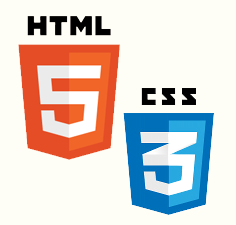

HTML (HyperText Markup Language) és un llenguatge de marcat per estructurar textos i relacionar-los en forma d'hipertext, és a dir de manera que des d'una paraula clau puguem accedir a d'altres textos o pàgines.
Fou creat el 1991 per Tim Berners Lee, creador de la web (1989), fet que va permetre l'arrencada del fenomen d'Internet cap als anys 90. Des d'aleshores s'han publicat diferents versions del llenguatge, fins arribar al W3C HTML4 (1999) i la versió d'HTML més estricta que permet crear un XML vàlid, XHTML2 (2000)
Després de passar per una fase beta de proves i millores, finalment, el 2014 el W3C (World Wide Web Consortium) aprovà la nova versió d'HTML: HTML5, amb força novetats i eines.
HTML5 marca una evolució fonamental respecte anteriors versions ja que permet crear pàgines dinàmiques gràcies al propi llenguatge, mentre que, anteriorment, les pàgines eren estàtiques i calia fer ús de plugins o altres tecnologies per assolir la interactivitat que la web 2.0 requereix. Així mateix, la nova versió d'HTML acostuma a treballar conjuntament amb la nova versió de fulls d'estil, CSS3 (Cascading Style Sheets).
Les principals novetats del llenguatge es poden consultar al resum de la PAC 1.
En aquesta PAC veurem algunes de les novetats referents a les possibilitats en gràfics i de multimèdia. Aquest lloc web pretén ésser una recull d'eines i exemples sobre aquests temes de manera que pugui servir com a guia per a la matèria.
En aquest lloc web veurem els següents temes relacionats amb les eines per a gràfics i multimèdia del llenguatge HTML5:
Novedades en HTML5, Miguel Ángel Gutiérrez Beired
Darrera actualització: 30/11/2015